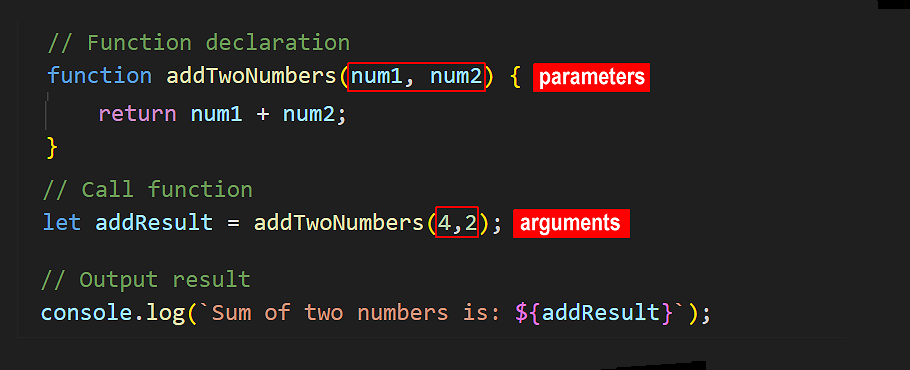
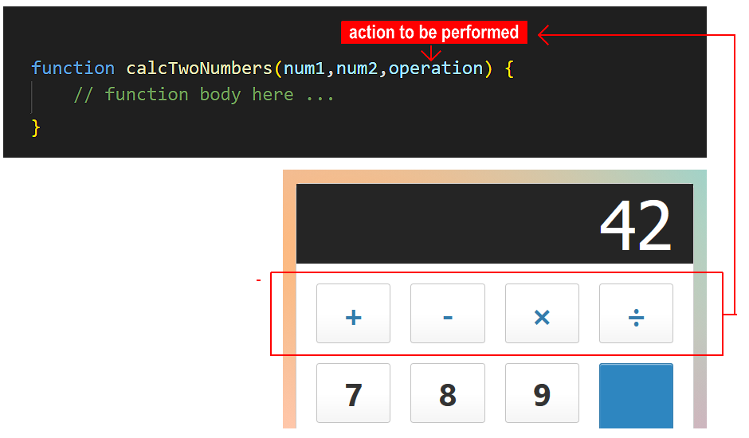
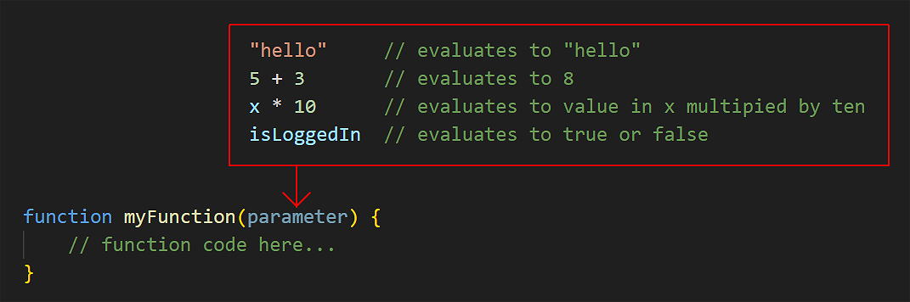
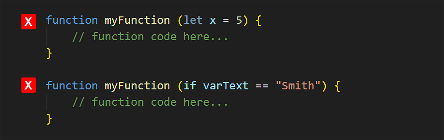
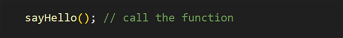
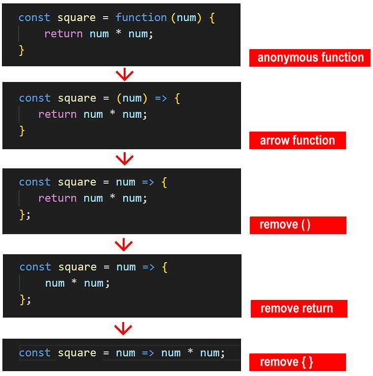

Learning Goals
At the end of this Tutorial, you will be able to:
- Create an anonymous function expression whose value is stored in a variable.
- Work with parameters, arguments and return values in anonymous functions.
- Create an arrow function and work with implicit returns.
- Immediately invoke an anonymous or arrow function without calling it.
For this Tutorial, in your javascript/exercises folder, create a new HTML file named workfile-9.html.
Create a new empty text file named script-9.js and save it in this same folder.
Add a link to script-9.js in your workfile-9.html file using a <script> tag with the defer attribute.
An overview of functions
In the previous Function declarations Tutorial, you learnt how to write functions to perform specific tasks - such as adding two numbers. You pass the two numbers (or other inputs) as arguments. The return keyword can then pass the result back to the calling program.
Whenever you need to run a function declaration in your app, you simply call it by name.
Passing a function as a variable
Now, imagine a function that could accept three arguments: the first two for numbers, and the third for the type of arithmetic operation required - add, subtract, multiply or divide.
You could think of the operation parameter as like the operation buttons on a calculator.
This is an example of moving from hard-coded logic (always adding) to dynamic logic (the operation is now a parameter than have different values, as required). It makes your code more flexible and reusable.
But only expressions can be passed as arguments...
Only expressions can be passed as arguments. Expressions are values, such as numbers or strings. Or anything that produces a value. See some examples below.
However, function declarations are statements, not expressions. Statements are instructions to perform an action - such as creating variables with let or const, or controlling program flow with if.
You cannot pass a statement as an argument to another function. See some examples below.
Introducing function expressions
To pass a function as an argument, you need a new type of function that can be treated like an expression.
To convert a function declaration to a function expression, follow these steps:
- Remove its name, and
- Assign it to a variable
Using const to declare the variable ensures the function is not accidentally changed or overwritten elsewhere in the program.
You can run a function expression by calling the name of the variable in which it is stored.
In short, a function expression represents an operation or functionality that can be assigned to and stored in a variable, and passed to another function as an argument.
Because they have no name, function expressions are usually referred to as anonymous functions. While the function itself has no name, — the variable storing it does.
Working with anonymous functions
Copy the following sample anonymous function to your script-9.js file and verify it runs correctly.
// ======== ANONYMOUS FUNCTIONS ========
// Anonymous function
const showGreeting = function () {
console.log('Hello from anonymous function');
};
showGreeting(); // Hello from anonymous functionAs with function declarations, function expressions can accept arguments and return the result to the calling code. Copy the four examples below, each one of which performs a single arithmetic operation and returns the result.
// ======== ARITHMETIC ANONYMOUS FUNCTIONS ========
const addTwoNums = function (num1, num2) {
return num1 + num2;
};
const subtractTwoNums = function (num1, num2) {
return num1 - num2;
};
const multiplyTwoNums = function (num1, num2) {
return num1 * num2;
};
const divideTwoNums = function (num1, num2) {
return num1 / num2;
};
// Call the functions with sample arguments and log results
let resultAdd = addTwoNums(8,2);
console.log(`Addition result: ${resultAdd}`);
let resultSubtract = subtractTwoNums(8,2);
console.log(`Subtraction result: ${resultSubtract}`);
let resultMultiply = multiplyTwoNums(8,2);
console.log(`Multiplication result: ${resultMultiply}`);
let resultDivide = divideTwoNums(8,2);
console.log(`Division result: ${resultDivide}`);Experiment with different argument values and verify the code runs correctly.
Passing a function expression as an argument
Now, let's create an 'all-purpose' calculator-style function declaration that can accept any one of the add/subtract/multiply/divide function expressions as an argument.
/* Calculator function that accepts function expression
as an argument */
function doCalculation(num1, num2, operation) {
return operation(num1, num2);
}
let resultCalcAdd = doCalculation(10, 5, addTwoNums);
console.log(`Calculator addition result: ${resultCalcAdd}`);// 15
let resultCalcSubtract = doCalculation(10, 5, subtractTwoNums);
console.log(`Calculator subtraction result: ${resultCalcSubtract}`);// 5
let resultCalcMultiply = doCalculation(10, 5, multiplyTwoNums);
console.log(`Calculator multiplication result: ${resultCalcMultiply}`);// 50
let resultCalcDivide = doCalculation(10, 5, divideTwoNums);
console.log(`Calculator division result: ${resultCalcDivide}`);// 2Experiment with different argument values and verify the code runs correctly.
About arrow functions
A so-called arrow function is a shorthand way of typing an anonymous function expression.
You can convert a regular anonymous function to an arrow function as follows:
- Remove the function keyword. But keep the parentheses ().

- After the parentheses (), type a so-called ‘fat arrow‘ symbol =>.

That's it. You have now created an arrow function.
As a simple example, copy the sample arrow function below into your script-9.js file and verify it runs correctly.
// ======== ARROW FUNCTIONS ========
// Arrow function
const helloFromArrow = () => {
console.log('Hello from arrow function');
};
// Call the arrow function using the variable name
helloFromArrow();As with regular anonymous functions, an arrow function can contain parameters that you can pass values to as arguments. And an arrow function can return a value back to the program that called it.
Arrow functions are commonly used when:
- There is only one statement in the function body.
- There is no or only one parameter expected by the function.
Arrow functions: single-statement, single-parameter
When an arrow function contains just one input parameter, you can omit the usual parentheses () around that parameter.
Copy the following arrow function to your script-9.js file.
// Arrow function without parentheses around single parameter
const greetNoParen = name => {
return `Hello, ${name}!`;
};
const greetingNoParen = greetNoParen("Mary");
console.log(greetingNoParen); // Hello, Mary!Implicit and explicit returns from arrow functions
But you can make this code even more concise! When an arrow function contains only one statement, you can:
- Write the arrow function on one line.
- Omit the { } around the code block.
- Omit the return keyword.
In script-9.js, update your arrow function as shown below and verify it still works.
// Arrow function without parentheses
const greetNoParen = name => `Hello, ${name}!`;No { } and no return keyword needed!
Below is an illustration of how you can simplify an anonymous function that calculates the square of a number.
When an arrow function contains only a single statement, omitting the return keyword creates an implicit return. See the illustration below.
Here are some examples of single-statement arrow functions with implicit returns. Copy them to your script-9.js file and verify they run without error.
// Single-statement arrow functions with implicit returns
const double = x => x * 2;
console.log(double(10)); // 20
const halfNum = num => (num / 2);
console.log(halfNum(200)); // 100
const add15ToPrice = num => (num + 15);
console.log(add15ToPrice(100)); // 115
// Calculate product price after 20% tax
const finalPrice = (price, tax) => (price + (price * tax));
console.log(finalPrice(50, .20)); // 60
// Testing a number above zero
const isPositive = num => num > 0;
console.log(isPositive(5)); // true
const uppercase = str => str.toUpperCase()
console.log(uppercase("hello")); // HELLOVerify the above functions all run without error.
Note: It is not recommended to use arrow functions when you have multiple statements in the function body. You will not shorten the function syntax significantly and increase the likelihood of errors.
Anonymous and arrow functions are particularly useful when:
- You want to create some once-off logic that won't be reused elsewhere in your code. For example, short, single-purpose operations inside conditionals and loops.
- You're working with event listeners or callbacks
Functions as first-class citizens
In JavaScript, functions are known as first-class citizens. This means they are treated like any other value in the language. Just like numbers or strings, functions can be:
- Stored in variables
- Passed as arguments to other functions
- Returned from functions
In the example above, we passed addTwoNums into another function as a value. This flexibility is one of the reasons JavaScript is such a powerful and modern programming language.
Anonymous and arrow functions are not hoisted
One important difference between a function declaration and an anonymous or arrow function is that the first is hoisted while the other two are not.
As a result, you can call an anonymous or arrow function only after you have created it – and never before.
Immediately-invoked anonymous and arrow functions
You can amend the syntax of an anonymous or arrow function so that it is run without being called from elsewhere in the program. Such a function is said to be immediately-invoked. This pattern is known as an Immediately-Invoked Function Expression (IIFE).
Note that function declarations cannot be immediately-invoked. Only anonymous and arrow functions can.
Function declarations cannot be immediately invoked because they are statements. To run a function immediately, JavaScript must treat it as an expression, which is why we wrap anonymous or arrow functions in parentheses ().
Copy this anonymous function to your script-9.js file and verify it runs without being called.
// Immediately-invoked anonymous function
(function() {
console.log("Hello from immediately-invoked anonymous function");
})();Because such a function is not called but runs immediately, it does not need a name. Accordingly, you do not need to assign it to a variable.
To invoke an arrow function immediately, wrap the function inside parentheses () and add another parentheses () after it.
Copy the arrow function below to your script-9.js file and verify it runs without being called.
// Immediately invoked arrow functions
(() => {
console.log("Hello from arrow function");
})();
// With parameters
((name, age) => {
console.log(`Processing ${name}, age ${age}`);
return `Processed ${name}`;
})('John', 30);Try it yourself
In your script file...
---
Create an anonymous function that takes two parameters: firstName and lastName. The function should output a full name with the last name in uppercase. Store it in a variable called formatName.
---
Create an anonymous function that takes three numbers as parameters and outputs their average. Store the output it in a variable called calculateAverage.
---
Create an immediately-invoked anonymous function that calculates and displays the area of a rectangle with width of 10 and height of 5.
---
Create these arrow functions that work with multiple parameters:
- Create combineWords that takes two strings and joins them with a space
- Create calculateArea that computes the area of a rectangle (width × height)
- Create calculateVolume that computes the volume of a box (width × height × depth)
---
Convert these anonymous functions to arrow functions:
// Simple greeting
const sayHelloUser = function() {
return "Hello!";
};
// Square a number
const squareNum = function(x) {
return x * x;
};
// Check if string is empty
const isEmptyStr = function(str) {
return str.length === 0;
};
More learning resources
Tutorial Quiz
Tutorial Podcast
Sample AI prompts
I'm learning about anonymous functions in JavaScript. Could you create a comparison table showing the key differences between regular function declarations and anonymous functions?
Could you show me some common mistakes programmers make when working with anonymous functions and how to fix them? Please include examples of scope issues, incorrect syntax, and any other pitfalls I should watch out for.I'm learning about arrow functions in JavaScript. Could you compare them with regular anonymous functions, focusing specifically on syntax differences and use cases? Please provide practical examples showing when arrow functions would be the better choice and when they wouldn't be ideal.